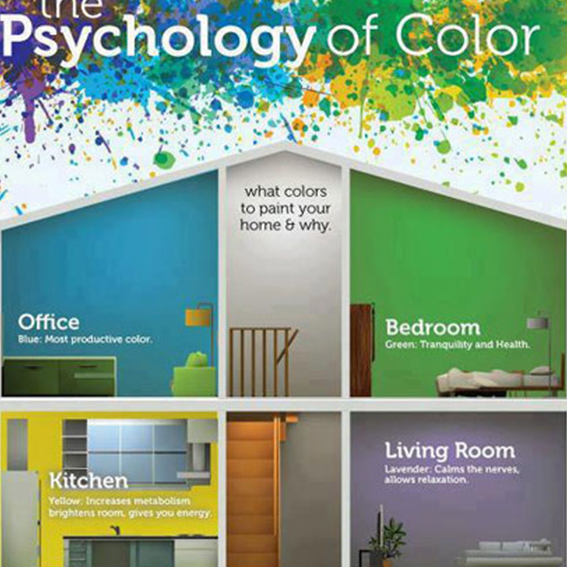

With the development of mankind, psychological research plays an important role in science and technology. This thesis focuses on the study of AI housekeeper in the prospective home architecture. The study consists into three areas: Firstly, the effect of psychology on architecture; secondly, the effect of psychology on AI; thirdly, the discussion for artificial housekeeper by psychology in the prospective home architecture
Firstly, the effect of psychology on architecture
Research of book “Can an Architect Design a Space that will Unconsciously Create a Mood that Would Motivate People to be More Productive?” edited by Irving M.Weiner refer:
Environmental influences can cause hormones such as cortisol to be stimulated witch can have an effect on one’s immune system, making one more vulnerable to infection during a prolonged stress.
Psychological environmental factors are all around people, not only in the controlled environments in man-made spaces but in natural surroundings. As a result, it is essential that one understands, perceives, and is aware that stimuli are being transmitted to one’s brain about how one perceives environmental influences. The “how” of perceiving data has an influence on one’s behavior and mood.
Through the application of psychology in architectural design, we understand the psychological feelings of different physical and natural environments. It can better create comfortable space feeling and improve the quality of human life. For instance: Color is an important part of architectural design. The book “Human, Color, Space” do research on different colors.
Effect of red: exciting, stimulating. Red is the most dominant and dynamic color. The eye actually has to adjust focus, since the natural focal point of red lies behind the retina. Consequently red appears closer than it is.
Effect of orange: exciting, stimulating, cheering. Orange is less masculine than red. It has very few negative associations. However, it may appear cheap or without vigor if low in saturation.
Effect of yellow: cheering. When pure, yellow is the happiest of all colors. In radiates warmth, cheerfulness, and inspiration and signifies enlightenment, and communication.
Effect of green: retiring, relaxing. Contrary to red, when looking at green the eye focuses exactly on the retina, which makes green the most restful color to the eye. Green can symbolize nature but also mold and sickness.
Effect of blue: retiring, relaxing. Blue appears to be transparent, wet, cool, and relaxing. Opposite to red, blue will decrease a person’s blood pressure and pulse rate.
Effect of black: ominous. Black is associated with oppressive power, darkness, and the unknown. In architecture it is often used to make something appear as receding, such as the HVAC in a ceiling.
Through the research, different colors are different to people's psychological feelings. Similarly, the same color is different for different people actually, and introverts and extroverts also have different preferences for colors. Color can arouse people's associations and feelings and directly relate to the creation of environmental atmosphere. For instance, according to the color of building materials in different spaces, there is a dark space without sunlight, we should adopt warm colors to enhance the warm feeling, and in the well-lighted space, we should use more light grey to reduce the brightness. In the public space where people stay for a short time, we should use high visibility and bright color to enhance the warm atmosphere; in the guest room and office, we should adopt the harmonious color and the gray color to achieve a stable, gentle, peaceful atmosphere; in the large space, we should use the rich color level to expand the visual space and strengthen the stability of the space. For example, on the color selection of building materials in different climates, in summer, using white or light blue curtains will make people feel cooler inside; in winter, we put on warm curtains and make tablecloths out of warm cloth to make the house feel warmer. Not only color psychology, but also behavioral psychology, physiological psychology and cultural psychology can make the space of architectural design affect human mind.
Secondly, the effect of psychology on AI
Artificial intelligence is a branch of computer science that seeks to understand the essence of intelligence and produce a new kind of intelligent machine that can react in a similar way to human intelligence. Research in this field includes robotics, language recognition, image recognition, natural language processing and expert systems and so on. Since the invention of AI, its theory and technology have become more mature and its application fields have been expanding. It is conceivable that in the future, AI will bring technology products which will be the "container" of human wisdom. AI can simulate the information process of human consciousness and thoughts, and it is not human intelligence, but it can think like a man, and it may be more than human intelligence. With the development of human technology, the research of AI has reached a high level. AI does not just study in the conceptual work which is in the fields of judgment, reasoning, proof, recognition, perception, understanding, designing, thinking, planning, learning, and problem solving and so on, at the same time, it also includes the psychological models of human beings, including perception, memory, thought, emotion, emotion, volition, character, creation, etc..
Research of book “ Artificial Psychology: The Psychology of AI” edited by James A. Crowder refer:
Artificial Psychology is a theoretical discipline which was first proposed by Dan Curtis in 1963. This theory states that Artificial Intelligence will approach the complexity level of human intelligence when the artificially intelligent system meets three very important conditions: • Condition 1: The artificially intelligent system makes all of its decisions autonomously (without supervision or human intervention) and is capable of making decisions based on information that is 1) New, 2) Abstract, and 3) Incomplete. • Condition 2: The artificially intelligent system is capable of reprogramming itself (evolving), based on new information and is capable of resolving its own programming conflicts, even in the presence of incomplete information Condition 3: Conditions 1 and 2 are met in situations that were not part of the original operational system (part of the original programming), i.e., novel situations that were not foreseen in the design and initial implementation of the system.
We believe that in the prospect development of AI, computers will mimic human activities and reach the level of human intelligence. Psychology plays a crucial role in AI. The most important part of AI is to develop the code. With the development of AI and psychology, psychology will permeate every detail and change of human being. In the future, we imagine that using AI to automatically capture every subtle piece of research on psychology and program it into a class in coding, finally create countless classes and even if make computers create classes automatically, and to realize the computers can completely simulate the mental state of human.
Thirdly, the discussion for artificial housekeeper by psychology in the prospective home architecture.
We discuss the use of psychology in the artificial housekeeper in the prospective home architecture based on the effects of the first and second aspects of the study. In the future, I believe that every family will have a virtual AI housekeeper, like the one in Iron Man, with powerful analytical and feedback functions. Therefore, psychology becomes an important part. Firstly, by analyzing the factors of different ages, cultural background, personality, gender and so on, the AI housekeeper gets the psychological preference of different people, then, it designs and calculates the optimization scheme and feedback to human. For example, different people have different activities at home, such as working, breaking, reading, parties and so on. AI automatically identifies the state of human activities at home and analyses the specific environment required for a given state of work, which is then achieved by automatically calculating and adjusting the light, window size and indoor temperature. For another example, AI can also be used to care for children and old people. Psychologists point out that psychological personality changes between children and adolescents are unstable. Through the research of psychology, we can optimize the AI code, get the most suitable way of communication, and achieve the optimal children education.
Psychology plays an important role in artificial housekeeper, it can make our lives more rational, convenient, comfortable, and efficient by researching biology and science in an optimal way.